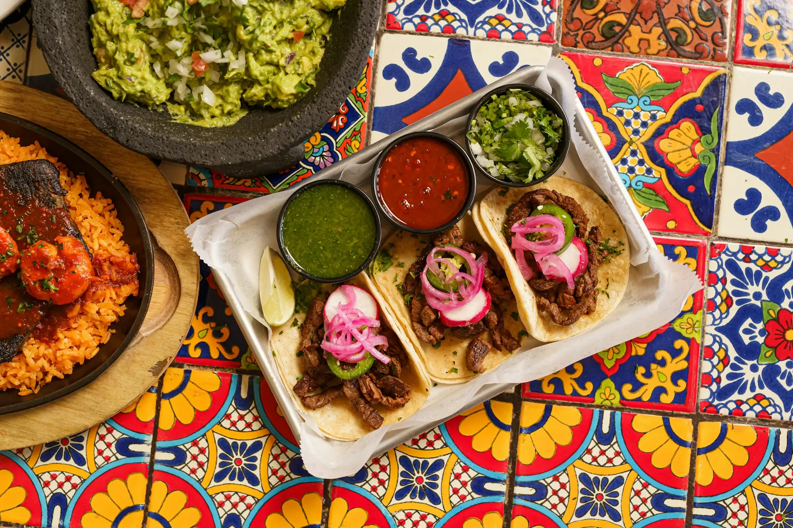
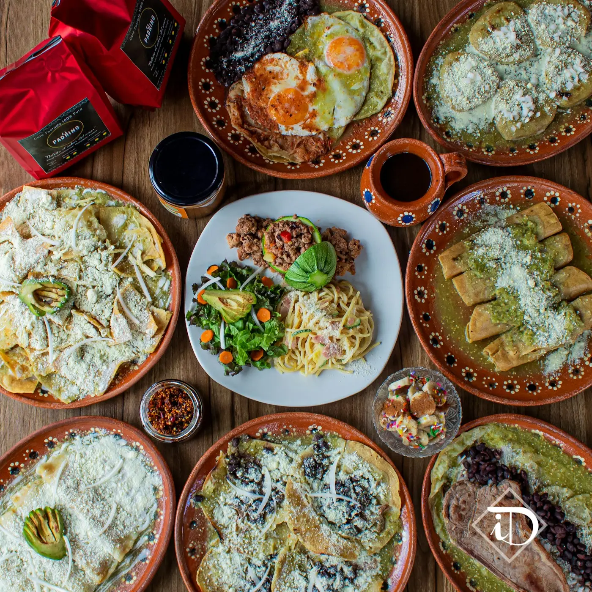
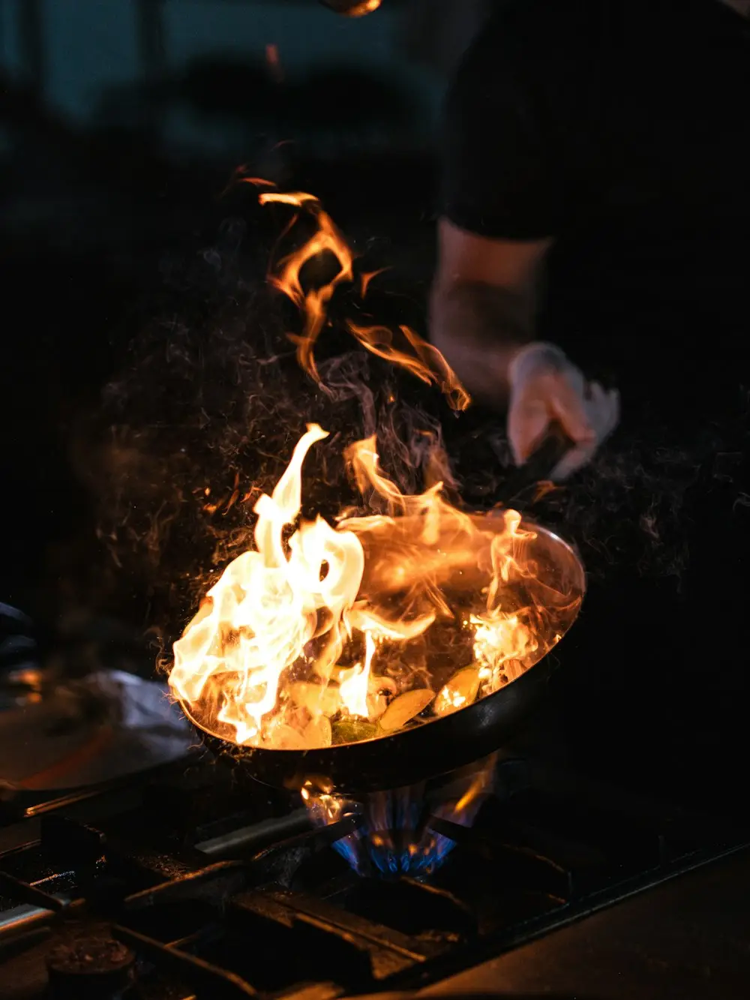
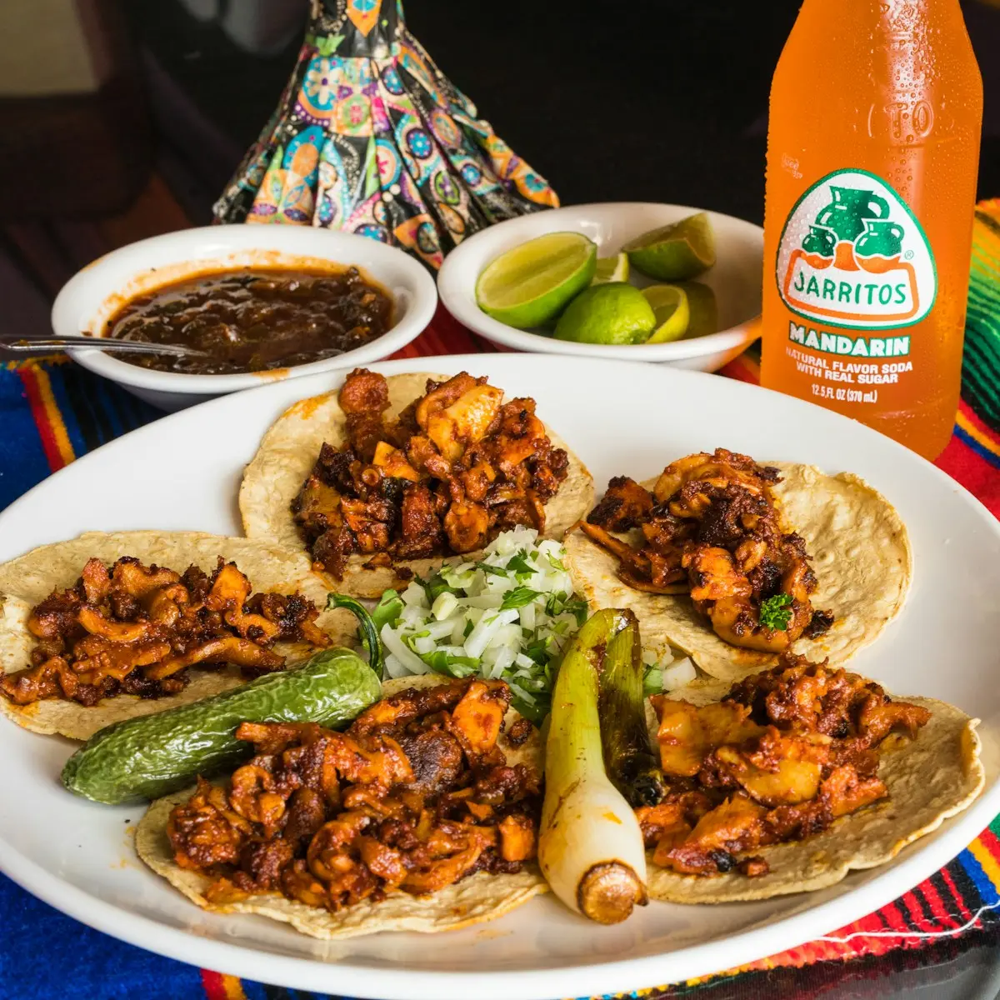
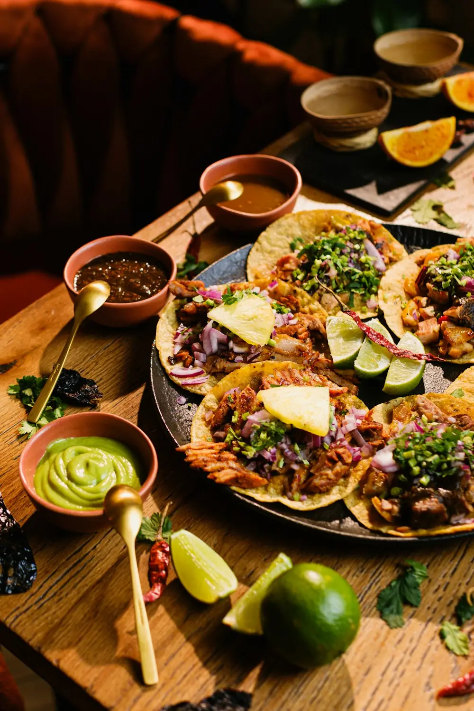
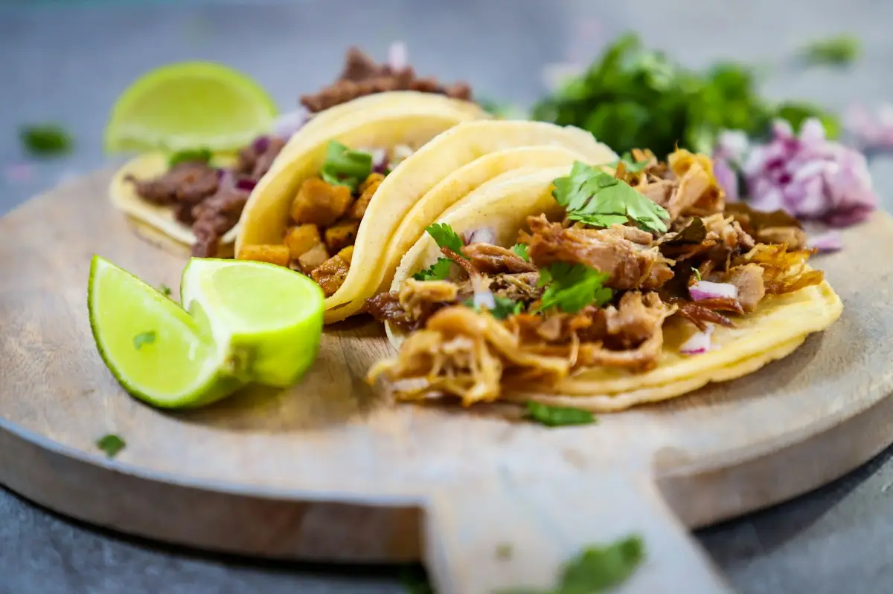
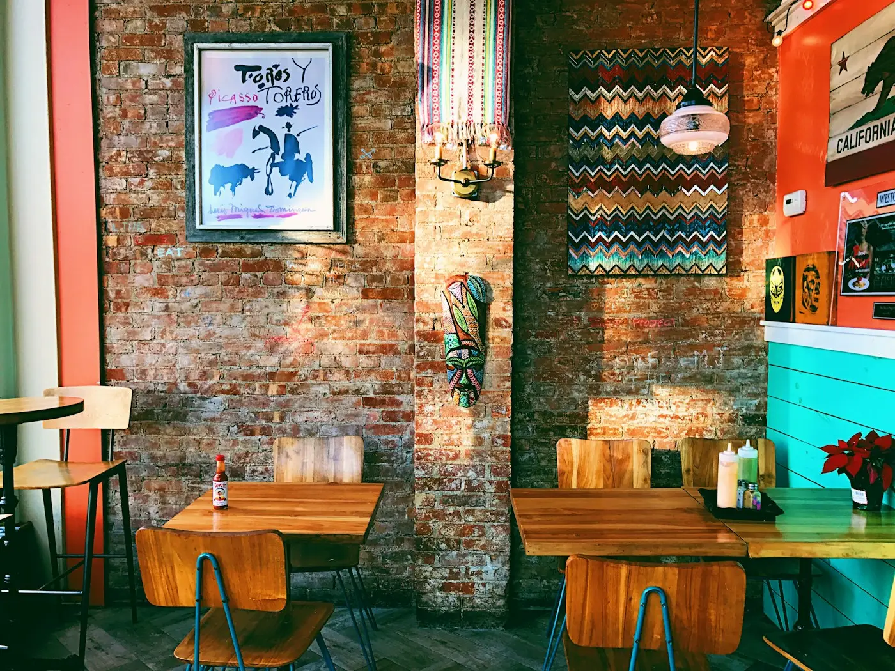

Consultando horario
Cocina de leña, tortillas a mano.
Comida de fonda en la Col. Americana. Comes aquí o te lo llevamos a tu casa.






Horario
Cocina abierta hasta 30 minutos antes de cerrar.

Dónde estamos
Col. Americana, Guadalajara, Jalisco. A dos cuadras de Av. Chapultepec, con estacionamiento en la calle.
Cómo llegar¿Se te antojó?
Mándanos tu pedido y en 40 minutos está en tu puerta.
Pedir por WhatsApp